Current Situation
This school doesn't have a computer lab. The government just gave them two keyboards to give the students the feel of using a computer. However,they didn't give them an actual computer. This limits the students' education, as they have limited access to imformation, which impacts their creativity and preperation for the future.
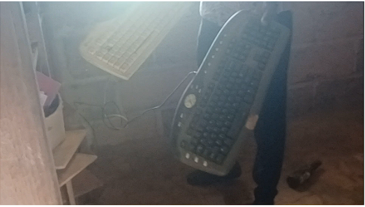Ideal Scenario
All students have access to sufficient keyboards for hands-on learning. There is also a board and an extra computer for each student and a projector to follow along. Access to the computers increases the student's education and increases their creativity.
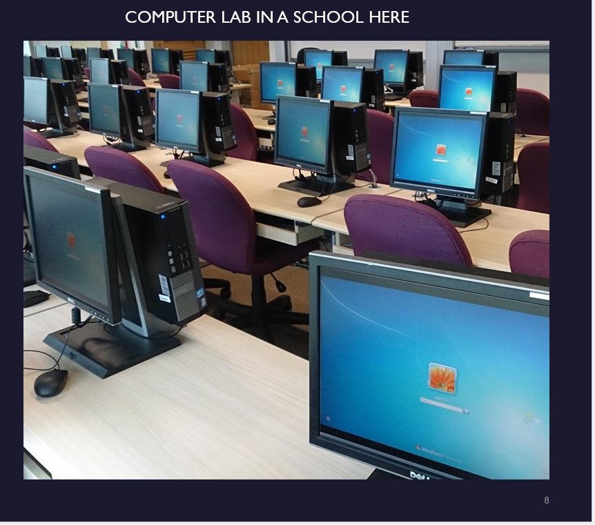Current Situation
At the school, the teachers don't have a board to draw on! Their only source of drawing or demonstrating something is the wall. The problem with not having a board is that it prohibits interactive learning for the students.

Ideal Scenario
In comparison, a school in the United States has a board for the teachers to draw and demonstrate their lessons. This allows for interactive learning and increases the students' education.
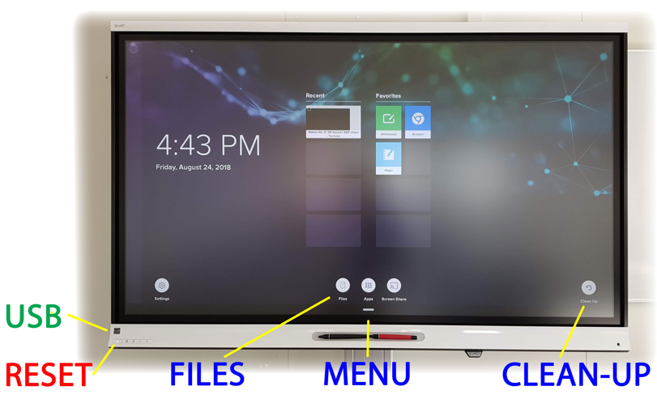Current Situation
In this school, the desks are only meant to fit two people; however, the students have to sit in groups of three. Worse, some students have to sit on the floor or stand. This limits the amount of students learning.
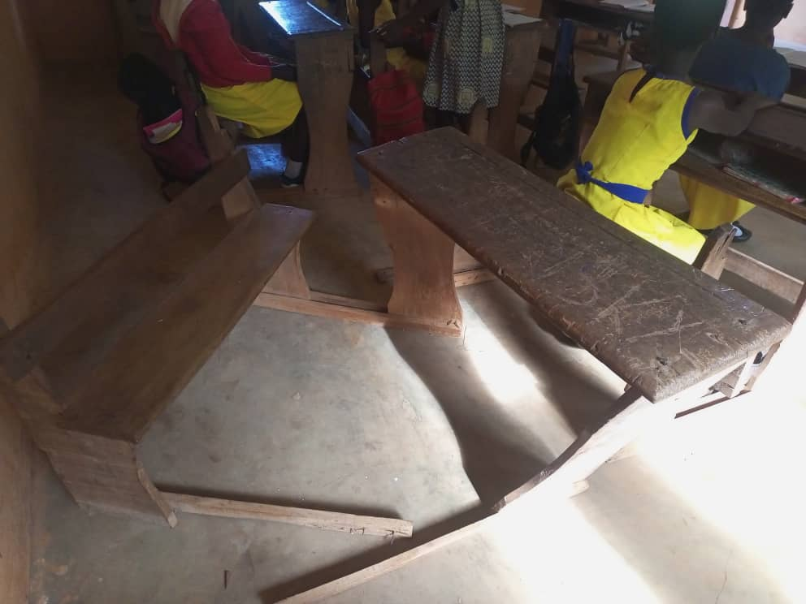Ideal Scenario
In comparison, a school in the United States has enough chairs, desks, and tables for each student to sit in. This allows for more students to learn and increases the students' education.
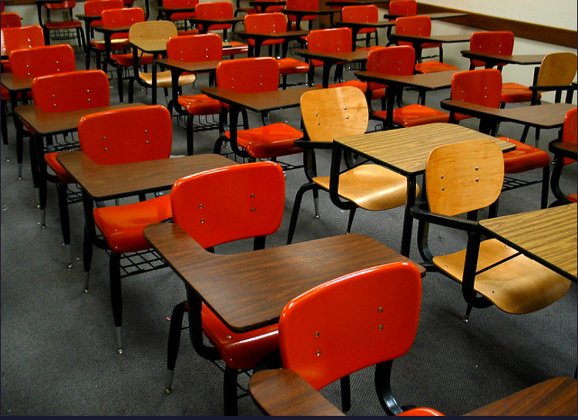Current Situation
The school has no library! It's just papers on wooden shelves. The lack of library limits the student's ability to learn.
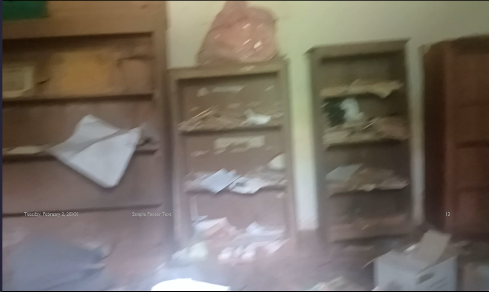Ideal Scenario
By contrast, a school in the United States has a library filled with books and desktop computers for students to do their schoolwork. This excels the students' mind to learn new things.
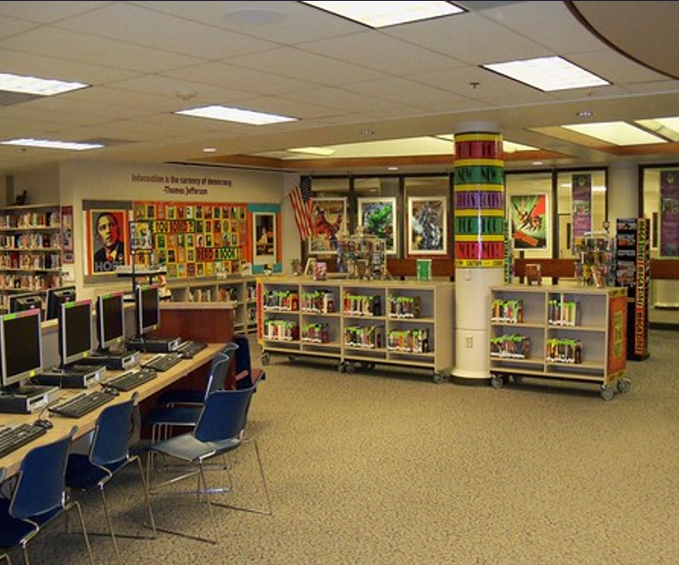Current Situation
The houses for the teachers look worn out and shabby. Here's the problem with this: the school is far away from the city, and any teacher would NOT like to stay for a night, let alone an entire school year, in these houses!
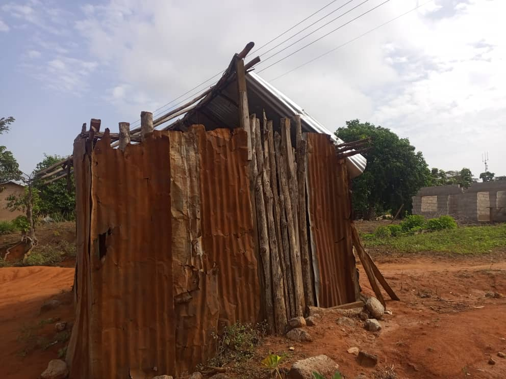Ideal Scenario
By contrast, a school in the United States is in an area close to where all the teachers live.
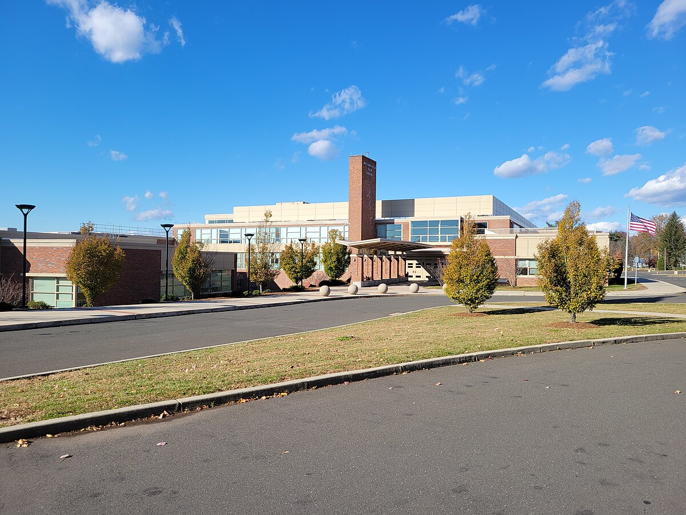Current Situation
The kids really like to play soccer (a.k.a football as they call it). The only problem, though, is that they can't cut the grass down; they don't have a lawnmower. Due to this, the grass in the field gets so high, that the students aren't able to play sports. Not being able to go outdoors hinders students' socialization with others.
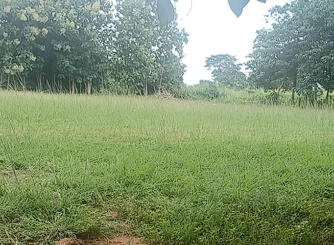Ideal Scenario
By contrast, an ideal school has a playground or any type of area where students can socialize, hence improving their socialization skills and allowing them to enjoy themselves and have fun.
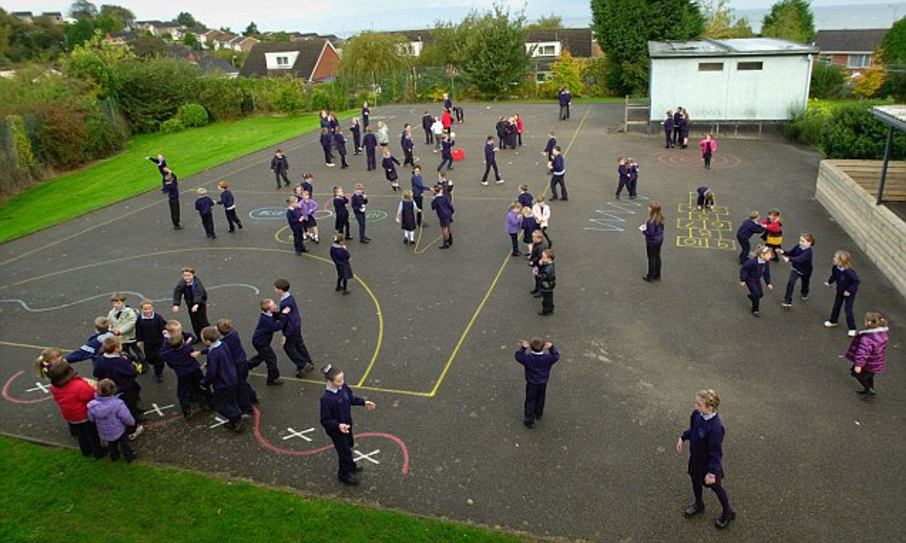Current Situation
The school does not have any mode of Transportation to pick up students or drop them off. Thus, the students have to walk many miles in a jungle-like environment to get to the school.
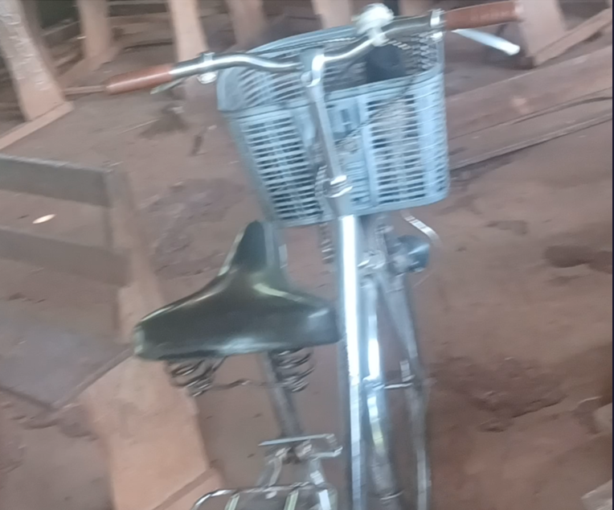Ideal Scenario
By contrast, an ideal school has buses to pick up and drop off students at certain stops.
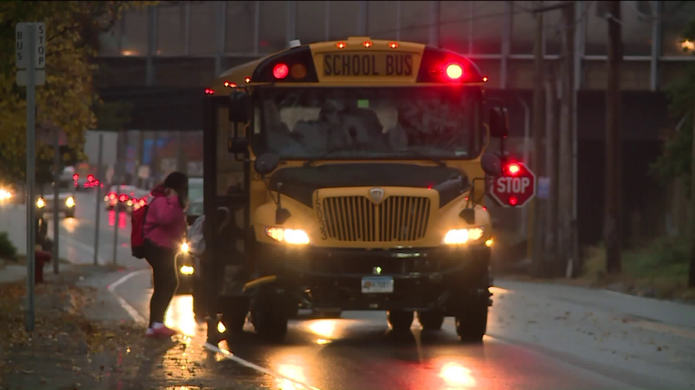Current Situation
The students have very little to no clothes to wear for school, and their uniforms are worn out.
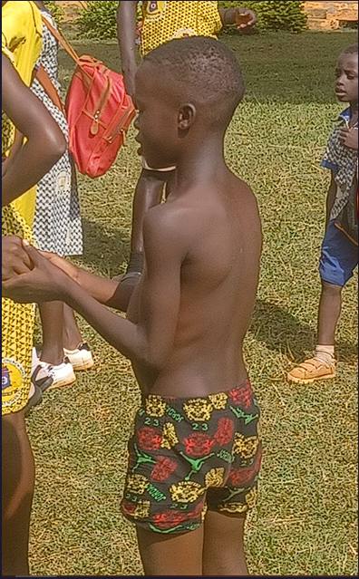Ideal Scenario
By contrast, an ideal school has uniforms for the students to wear.
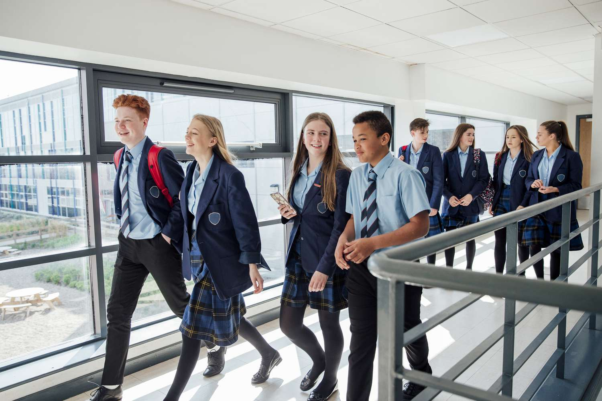Donate Today!
If you would like to help the school improve, please donate today! Your support helps us fulfill our mission! Thank you, and God bless you for your genorosity!
The Lord bless you and keep you; the Lord make His face shine upon you, and be gracious to you; the Lord lift up His countenance upon you, and give you peace.
Numbers 6:24-26 NKJV